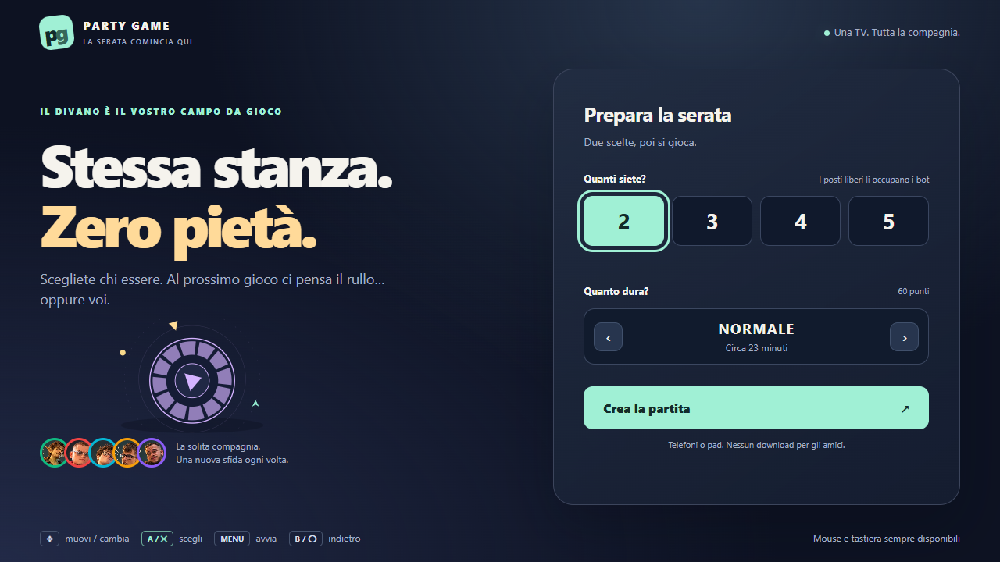
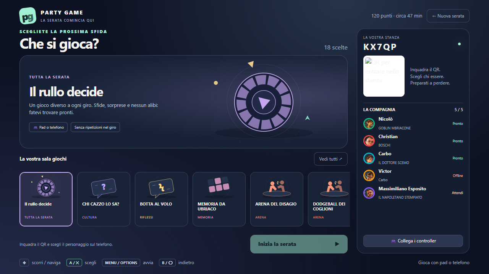
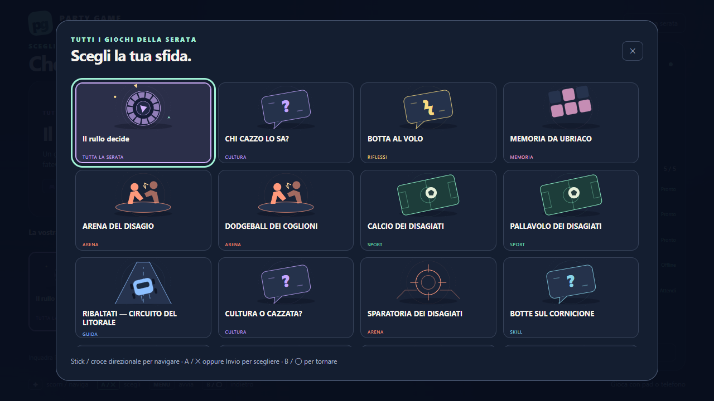
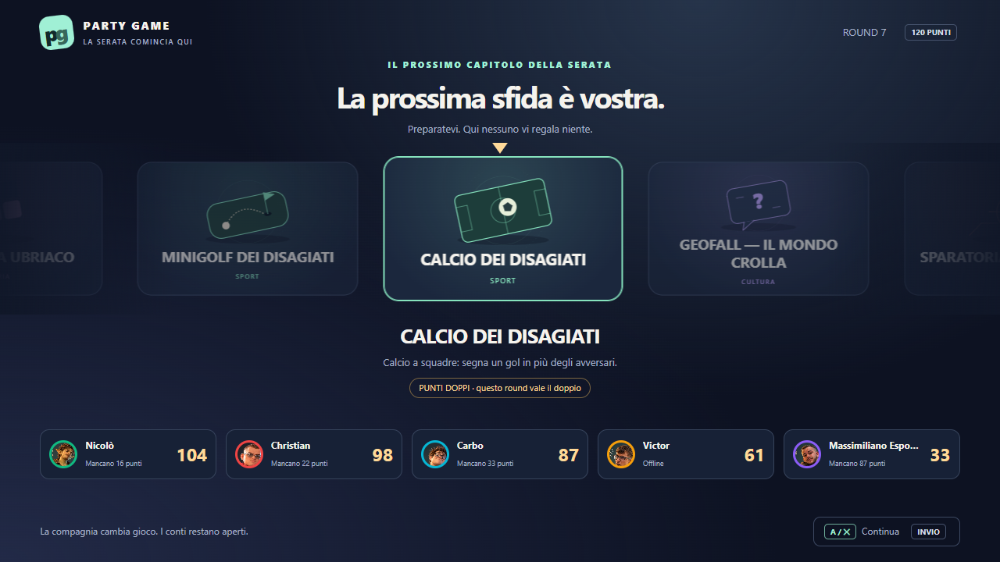

PARTY GAME · HOME / CATALOGO / RULLOLa serata comincia qui.
Una home nuova, schede illustrate e un catalogo da sfogliare con il pad. Il rullo riprende lo stesso stile e conserva il risultato scelto dal server.
Stick / croce naviga · A / ✕ scegli · B / ◯ indietro · Menu / Options avvia. Anche mouse e tastiera.

Prepara la serata: posti, durata e creazione della stanza.
La sala giochi: anteprima, minigiochi, QR e compagnia.
Il catalogo completo: navigazione a griglia e focus visibile.
Il rullo: schede illustrate, scelta centrale e classifica.Verifiche con Xbox e DualSense simulati, un telefono tramite browser e selezione sul server. Layout controllati a 720p e 1080p. Nessuna prova dichiarata su gamepad fisici.
Nessun commit, push o deploy.